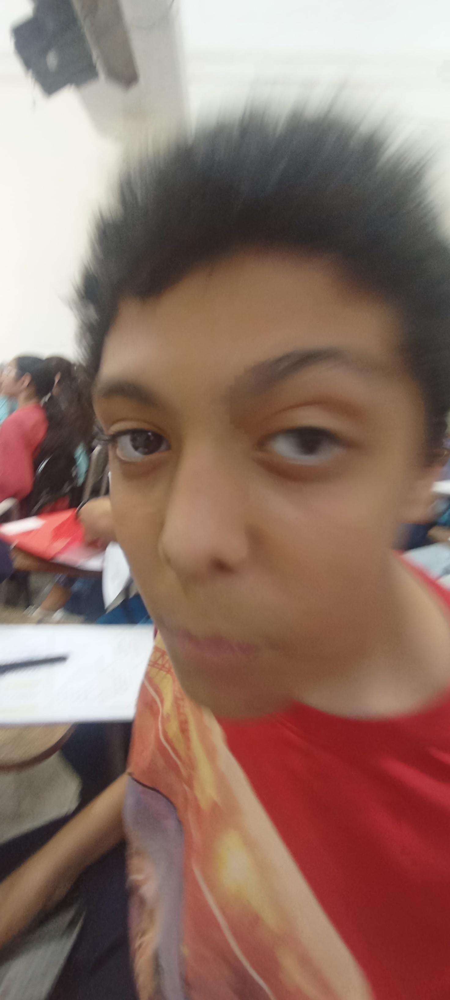
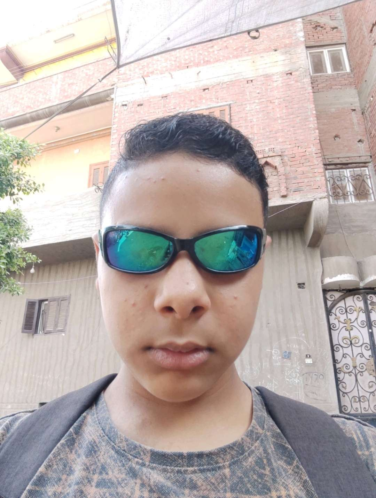
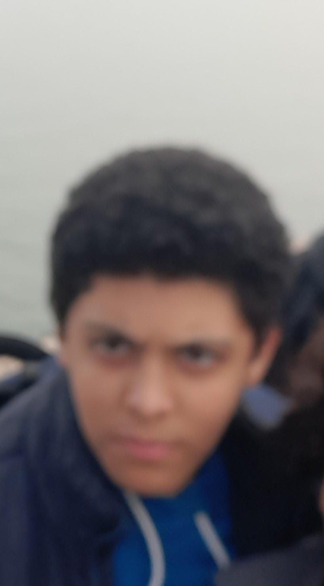
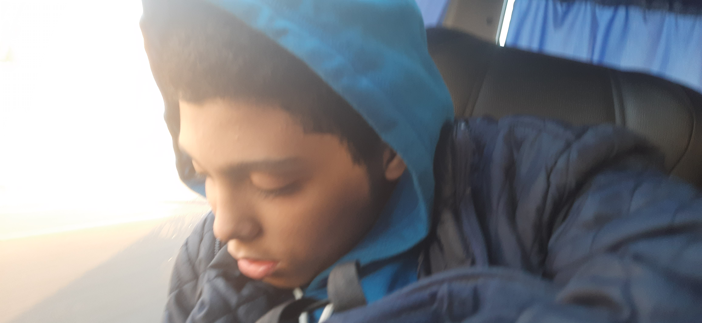
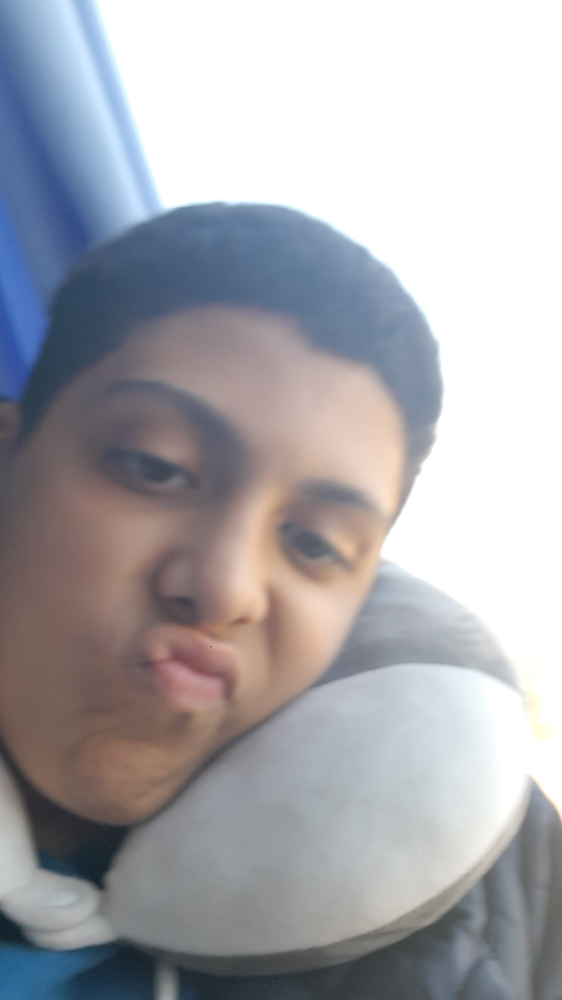

Welcome to BIG FAT MARAWAN
Home of the legendary Marawan variants
Marawan Cards
Marawan is quite certainly a type of weird biological animal. He has 425 chromosomes, although his weight is 50 times that. Found mostly near food, he comes at a concerning height of 3'1.
Marawan comes in many variants. This one is "Cringe Glasses Marawan" — always seeking "huzz" but never succeeding.
"Angry Marawan" appears when there is no food nearby. This species is hostile and must be fed immediately to avoid damage.
"Sleeping Marawan" is the rarest variant, often spotted after heavy meals, snoring loudly near fridges or couches.
"Zesty Merwan" is the craziest version of Marawan. فجأة كده تلاقيه بيهيص ويعمل موڤز عشوائية! He's always full of energy, especially لما يسمع شوية مزيكا أو يشم ريحة أكل. Scientists قالوا إنه غالبًا أكل كمية over من lemon snacks، ومحدش بيعرف يوقفه لما يبدأ!
